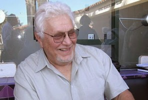
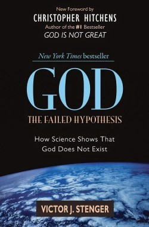

Dios: Una hipótesis que se puede poner a prueba
A sus 79 años el autor de más de trece libros y quien fuera miembro del comité de la organización Comité para la investigación escéptica, Victor Stenger, murió en Hawai el 25 de agosto de 2014.
Este físico de partículas se caracterizó por trabajar en pro de la razón y la ciencia. Su lucha en contra de la superstición le valió en 1992, una demanda por Uri Geller, un charlatán quien afirma tener poderes psiquicos. Stenger ganó la demanda.
Pero Stenger no solo combatió las mentiras de los “psiquicos”, también cuestionó a las religiones en general. En 2007 publicó “Dios La Hipótesis Fallida: Cómo la ciencia demuestra que Dios no existe.”
Como abre bocas de este libro, y en homenaje a este activista ateo les comparto este texto de de Stenger.

En mi libro de 2007 Dios: La Hipótesis Fallida: Cómo la ciencia demuestra que Dios no existe apliqué el proceso científico de la prueba de hipótesis para la cuestión de Dios. La objeción común que escuché fue que la existencia de Dios no es una hipótesis científica. Voy a explicar por qué digo que sí lo es.
El método científico no se limita a lo que los científicos profesionales hacen, sino que puede ser aplicado a cualquier pregunta que se refiera a observaciones. El cerebro no tiene la capacidad de conocer el momento, la dirección y la energía de cada fotón que golpea en los ojos. En su lugar, este órgano opera sobre una imagen simplificada de los objetos, ya sean rocas, árboles o personas, asignándoles propiedades generales que no abarcan todos los detalles. Es decir, hacemos modelos. La ciencia meramente racionaliza el procedimiento, comunicando con voz precisa y por escrito el acuerdo sobre lo que todos han visto y cuál es la mejor manera de representar las observaciones colectivas. Lo que se llaman teorías científicas son sólo modelos.
El Modelo de Dios
La religión lleva a cabo un proceso similar, aunque uno en el que el acuerdo se afirma generalmente por autoridad y no por un consenso de objetivos y de observaciones imparciales. Desde los primeros días de la humanidad, los dioses han sido imaginados como poseedores de atributos que la gente podía entender y con los cuales podían relacionarse. Así los dioses y los espíritus tomaron la forma de objetos extraídos de la experiencia: el sol, la tierra, la luna, los animales y los seres humanos. Los dioses de los antiguos egipcios tenían forma de animales. Los dioses de los antiguos griegos tenían la forma de seres humanos imperfectos pero inmortales. El Dios del judaísmo, del cristianismo y del Islam tomó la forma de un poderoso rey varón autocrático entronizado por encima de sus súbditos.

Cada modelo de dios se desarrolló a partir de la cultura de la época.
Cada uno de estos modelos de dios se desarrolló a partir de la cultura de la época. Si el proceso continuara hasta hoy, todo el mundo debería adorar al centro comercial. De hecho, muchas de las mega-iglesias en los Estados Unidos se encuentran hoy localizadas en centros comerciales.
Al tratar en términos de modelos de dioses que se basan en concepciones humanas, evitamos la objeción de que el “verdadero” Dios podrá estar más allá de nuestras limitadas capacidades cognitivas. Cuando se demuestra que un dios particular es rechazado por la evidencia, no estamos demostrando que todos los dioses, concebibles o inconcebibles, no existan. Simplemente estamos mostrando más allá de una duda razonable de que un dios con determinados atributos hipotéticos explícitos descritos por el modelo no existe. Además, el hecho de que un modelo de dios específico puede ser incompatible con la evidencia es causa suficiente para no tener en cuenta este modelo en las prácticas de la vida cotidiana.
La relación exacta entre los elementos de los modelos científicos y cualquiera que sea la verdadera realidad no es de gran preocupación para la mayoría de los científicos, o incluso no debería serlo de ninguna manera. Cuando los científicos tienen un modelo que describe sus mediciones, es consistente con otros modelos establecidos, hace predicciones exitosas y se puede poner en práctica, ¿qué más se necesita?
El modelo funciona bien no sólo describiendo observaciones, sino permitiendo aplicaciones prácticas. No hay absolutamente ninguna diferencia en si un electrón es “real” o no cuando aplicamos el modelo de electrones que fluyen en un circuito electrónico para diseñar algún dispositivo de alta tecnología. Cualquiera que sea la realidad intrínseca, el modelo describe lo que observamos y esas observaciones son bastante reales.
Del mismo modo, no importa desde un punto de vista práctico si el “verdadero” Dios se parece a alguno de los dioses cuyas consecuencias empíricas hemos examinado y modelado. Las personas no adoran abstracciones. Ellos adoran a un Dios con cualidades que pueden comprender. El ejemplo más común de un modelo de Dios es un Dios personal que responde a las oraciones. Este modelo de dios no ha sido confirmado en numerosos experimentos controlados sobre la eficacia de la oración. De ello se desprende que una persona religiosa está perdiendo el tiempo orando por algún favor de un Dios así. Si el rezo funcionara, sus efectos deberían ser objetivamente observados. Y ellos no lo son.
Permítanme resumir los modelos de dios que son inconsistentes con las observaciones científicas.
Los fósiles podrían haber sido, inexplicablemente, encontrados fuera de la secuencia geológica. esto anularía la evolución. O como diría G.G. Simpson “conejos en el Cámbrico anularían la evolución”.
Dioses Inconsistentes
Un Dios personal que haya dado a los seres humanos un alma inmortal no está de acuerdo con los hechos empíricos que los pensamientos humanos, recuerdos y personalidades se rigen por procesos físicos en el cerebro, que se disuelven con la muerte. Facultades no físicas o extra-físicas de la “mente” no han podido encontrarse y no existe evidencia de una vida más allá de la muerte.
Un Dios personal cuyas interacciones con los humanos incluyan intervenciones milagrosas, como las descritas en las Escrituras, se contradice con la falta de pruebas independientes para los eventos milagrosos alegados.
Un Dios cósmico que afinó las leyes y constantes de la física para la vida, en particular la vida humana, no puede estar de acuerdo con el hecho de que el universo no es agradable para la vida humana, siendo tremendamente derrochador en tiempo, espacio y materia desde la perspectiva humana. También deja de estar de acuerdo con el hecho de que el universo está compuesto principalmente de partículas en movimiento al azar, con estructuras complejas como las galaxias que forman menos del cuatro por ciento de la masa total del universo.
Un Dios personal que se comunica directamente con los seres humanos por medio de la revelación no puede estar de acuerdo con el hecho de que nunca jamás se haya transmitido nueva información científicamente verificable mientras que muchas doctrinas erróneas y perjudiciales han sido afirmadas por este medio. Ninguna supuesta revelación contiene información que no estuviera ya en la cabeza de la persona que hace la afirmación. Por otra parte, la evidencia física ahora demuestra de manera concluyente que muchas de las narraciones bíblicas más importantes, como el Éxodo, nunca tuvieron lugar.
Un Dios personal que es la fuente de la moral y de los valores humanos no existe, ya que la evidencia muestra que los seres humanos definen la moral y los valores por sí mismos. Esto no es “moralidad relativa.” Creyentes y no creyentes están de acuerdo por igual en un conjunto común de valores y moral. Incluso las personas más devotas deciden por sí mismas qué es bueno y qué es malo, e incluso juzgan mucho de lo que dicen las escrituras como inmoral, como el genocidio, la esclavitud y la opresión de las mujeres. Los no creyentes no se comportan menos moralmente que los creyentes.
Un Dios personal que es omnisciente, omnibenevolente, y omnipotente no existe porque es lógicamente incompatible con la existencia del mal, en particular con el sufrimiento gratuito (problema estándar del mal).
¿Y si?
La existencia del Dios adorado por la mayoría de los judíos, cristianos y musulmanes no sólo carece de elementos de prueba empírica, sino que incluso se contradice con las evidencias. Sin embargo, esto no necesitaría haber sido así. Las cosas podrían haber sido diferentes y esto es importante de entender y esto justifica el uso de la ciencia para abordar la cuestión de Dios y refuta la afirmación que se oye con frecuencia de que la ciencia no puede decir nada acerca de Dios. Si las observaciones científicas hubieran confirmado al menos uno de los dioses modelo, aquellos creyentes que hacen esas declaraciones hubieran cambiado rápidamente de tono. Incluso los ateos más escépticos tendrían que plegarse a los hechos y tendrían que admitir que puede haber alguna posibilidad de que Dios exista. Pero esto no ha sucedido.
Consideren los siguientes eventos hipotéticos que, de haberse producido, habrían favorecido la hipótesis de Dios. Se invita a los lectores a pensar en sus propios escenarios similares del tipo “podrían haber sido”. Aunque no necesariamente probarían la existencia de Dios, ellos por lo menos darían algo de credibilidad a las creencias tradicionales, credibilidad que actualmente no poseen.
Observaciones hipotéticas
Se encontró evidencia de falsación de la evolución. Los fósiles podrían haber sido descubiertos inexplicablemente fuera de secuencia. Las formas de vida podrían no estar basadas todas en el mismo esquema genético. Podrían no haberse observado especies transitorias. Como se pensaba realmente en la época de Darwin, la edad del Sol podría haber resultado demasiado corta para la evolución. El descubrimiento de la energía nuclear cambió esto, mostrando que, alimentado por la fusión nuclear, el Sol tendrá una duración de diez mil millones años, tiempo suficiente para que la vida evolucione.
Las memorias y los pensamientos humanos podrían haber aportado pruebas que no pudieran ser plausiblemente explicadas por los procesos físicos conocidos. La ciencia podría haber confirmado poderes excepcionales de la mente que pudieran no ser plausiblemente explicados de manera física.
La ciencia podría haber descubierto evidencia convincente de una vida más allá de la muerte. Por ejemplo, una persona que hubiera sido declarada muerta por todos los medios conocidos por la ciencia podría volver a la vida con historias detalladas de una vida en el más allá que pudieran ser verificadas posteriormente. Por ejemplo, podría haberse reunido con Jimmy Hoffa quien le hubiera dicho dónde encontrar su cuerpo.
Del mismo modo, cualquier afirmación de una revelación obtenida durante un trance místico podría contener información científicamente verificable que fuera imposible de ser conocida por el sujeto.
Evidencias físicas e históricas podrían haber sido encontradas por eventos milagrosos y las narrativas fundamentales de las Escrituras. Por ejemplo, registros romanos de un terremoto en Judea en el momento de cierta crucifixión ordenada por Poncio Pilatos podrían haber sido encontrados. El Arca de Noé podría haber sido descubierta. El Sudario de Turín podría contener material genético sin rastro de un cromosoma Y y dado que la imagen es la de un hombre con barba, esto confirmaría que nació de una virgen. O, que ese material genético pudiera contener una nueva forma de molécula codificante que no se encuentre en ningún otro organismo vivo. Esto habría demostrado que un alienígena (si no un ser divino) fue el origen del ser envuelto.
El universo podría haber sido tan agradable para la vida humana como si hubiera sido creado con la vida humana en su diseño. Los seres humanos podrían haber sido capaces de pasar de un planeta a otro, con la misma facilidad con la que ahora se trasladan de un continente a otro, y ser capaces de sobrevivir en cada planeta (incluso en el espacio) sin soporte vital alguno.
Los eventos naturales podrían seguir alguna ley moral, en lugar de seguir leyes matemáticas moralmente neutras. Por ejemplo, el rayo podría golpear sólo a los malvados; las personas que se comportan mal podrían caer enfermas con más frecuencia; las monjas siempre sobrevivirían a los accidentes aéreos.
Los creyentes podrían haber tenido un mayor sentido moral que los no creyentes y otras cualidades medibles sensiblemente superiores. Por ejemplo, las cárceles podrían estar llenas de ateos, mientras que todos los creyentes vivieran felices prósperas vidas, contentos, rodeados de familiares amorosos y mascotas.
Se observarían milagros. Por ejemplo, las oraciones serían contestadas; un brazo o una pierna se regeneraría a través de la curación por fe.
Pero nada de esto ha sucedido. De hecho, lo contrario es cierto en algunos casos, tales como un número anormalmente bajo de ateos en las cárceles. Cada afirmación de un hecho sobrenatural se ha demostrado falsa. La hipótesis de Dios no ha sido confirmada por la evidencia. De hecho, esta hipótesis es fuertemente contradictoria con las observaciones de nuestros sentidos y las de los instrumentos científicos.
(Texto de Stenger visto en el blog amigo: “La ciencia y sus demonios”)
Volver a Simplemente ateísmo
Comentarios
Comments powered by Disqus